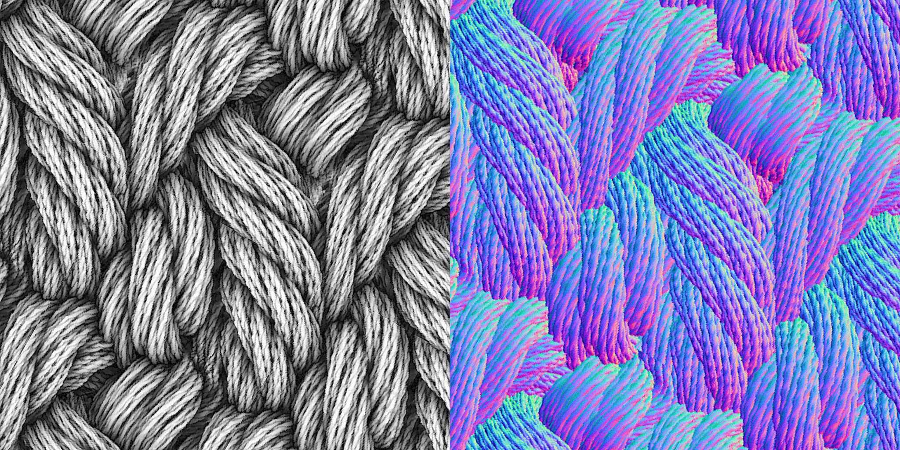

Download Fabric Textures for your 3D Render, Animation, or Game
Here’s a free 3D asset for you to try: textures of 3 kinds of textiles.
The ZIP file has normal maps, color mask maps, and ambient occlusion maps for 2 woven fabric types and 1 knit fabric type.
What’s in the Pack:
- Plain Weave: Normal Map, Ambient Occlusion Texture, Weft/Warp Mask
- Satin Weave: Normal Map, Ambient Occlusion Texture, Weft/Warp Mask
- Warp Knit Back View: Normal Map, Ambient Occlusion Texture, Alternating Threads Mask
The mask textures are for coloring different fabric threads different colors (if desired), producing bi-color alternating patterns.
Blender cloth material, Blender fabric texture free, Blender textile shader free, Blender satin material, Maya fabric textures free, 3DS Max fabric textures free, Unity game-ready fabric material free, Unreal Engine game-ready fabric textures free, royalty-free 4K PBR textures downloads
Sneak Peek
ambient occlusion map and normal map of a warp-knit fabric